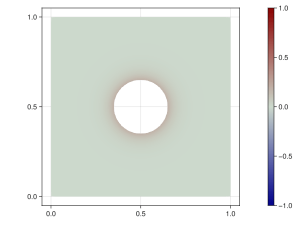

Transient heat equation (manual assembly)

Implementation
Load dependencies form Julia stdlib.
using LinearAlgebraImport other dependencies
import GalerkinToolkit as GT
import PartitionedSolvers as PS
import ForwardDiff
import GLMakie as Makie
import WriteVTKMain program. The individual functions are defined later.
function main(;mesh_size=0.02,R=0.15,T=2,N=100)
params = (;mesh_size,R,T,N)
state0 = setup_mesh(params)
state1 = setup_example(state0)
state2 = setup_accessors(state1)
state3 = assemble_matrices(state2)
state4 = setup_time_steps(state3)
time_steps_makie(state4)
time_steps_vtk(state4)
endmain (generic function with 1 method)Setup the mesh with GMSH
function setup_mesh(state)
(;mesh_size,R) = state
mesh = GT.with_gmsh() do gmsh
R = 0.15
dim = 2
rect_tag = gmsh.model.occ.add_rectangle(0,0,0,1,1)
circle_tag = gmsh.model.occ.add_circle(0.5,0.5,0,R)
circle_curve_tag = gmsh.model.occ.add_curve_loop([circle_tag])
circle_surf_tag = gmsh.model.occ.add_plane_surface([circle_curve_tag])
gmsh.model.occ.cut([(dim,rect_tag)],[(dim,circle_surf_tag)]);
gmsh.model.occ.synchronize()
domain_tags = [1]
outer_tags = [6,7,8,9]
inner_tags = [5]
gmsh.model.model.add_physical_group(dim,domain_tags,-1,"domain")
gmsh.model.model.add_physical_group(dim-1,outer_tags,-1,"outer")
gmsh.model.model.add_physical_group(dim-1,inner_tags,-1,"inner")
gmsh.option.setNumber("Mesh.MeshSizeMax",mesh_size)
gmsh.model.mesh.generate(dim)
GT.mesh_from_gmsh(gmsh)
end
(;mesh,state...)
endsetup_mesh (generic function with 1 method)Setup the quantities for this example
function setup_example(state)
(;mesh) = state
#Domains
Ω = GT.interior(mesh;physical_names=["domain"])
Γ1 = GT.boundary(mesh;physical_names=["outer"])
Γ2 = GT.boundary(mesh;physical_names=["inner"])
Γ = GT.piecewise_domain(Γ1,Γ2)
#Space
k = 1
V = GT.lagrange_space(Ω,k;dirichlet_boundary=Γ)
#Time dependent dirichlet field
uh = GT.semi_discrete_field(Float64,V) do t,uht
α = sin(3*pi*t)
g1 = GT.analytical_field(x->0.0,Ω)
g2 = GT.analytical_field(x->1.0*α,Ω)
g = GT.piecewise_field(g1,g2)
GT.interpolate_dirichlet!(g,uht)
end
#Initial condition
u0 = GT.analytical_field(x->0.0,Ω)
(;Ω,V,uh,u0,state...)
endsetup_example (generic function with 1 method)Create the accessor functions used later for integration
function setup_accessors(state)
(;Ω,V) = state
degree = 2*GT.order(V)
dΩ = GT.measure(Ω,degree)
face_point_x = GT.coordinate_accessor(dΩ)
face_point_J = GT.jacobian_accessor(dΩ)
face_point_dV = GT.weight_accessor(dΩ)
face_npoints = GT.num_points_accessor(dΩ)
face_dofs = GT.dofs_accessor(V,Ω)
face_point_dof_s = GT.shape_function_accessor(GT.value,V,dΩ)
face_point_dof_∇s = GT.shape_function_accessor(ForwardDiff.gradient,V,dΩ)
accessors = (;face_point_x,face_point_J,face_point_dV,
face_npoints,face_dofs,face_point_dof_s,face_point_dof_∇s)
(;accessors,state...)
endsetup_accessors (generic function with 1 method)Assemble the problem matrices
function assemble_matrices(state)
(;V,Ω,accessors) = state
#Allocate auxiliary face matrix and vector
n = GT.max_num_reference_dofs(V)
T = Float64
Ke = zeros(T,n,n)
Me = zeros(T,n,n)
#Allocate space for the global matrices
ff = (GT.FREE,GT.FREE)
fd = (GT.FREE,GT.DIRICHLET)
K_alloc = GT.allocate_matrix(T,V,V,Ω;free_or_dirichlet=ff)
M_alloc = GT.allocate_matrix(T,V,V,Ω;free_or_dirichlet=ff)
Kfd_alloc = GT.allocate_matrix(T,V,V,Ω;free_or_dirichlet=fd)
Mfd_alloc = GT.allocate_matrix(T,V,V,Ω;free_or_dirichlet=fd)
allocs = (;K_alloc,M_alloc,Kfd_alloc,Mfd_alloc,Ke,Me)
#Assembly loop (defined later)
assembly_loop!(state,allocs)
#Compress matrices
K = GT.compress(K_alloc)
Kfd = GT.compress(Kfd_alloc)
M = GT.compress(M_alloc)
Mfd = GT.compress(Mfd_alloc)
(;K,M,Kfd,Mfd,state...)
endassemble_matrices (generic function with 1 method)Manual assembly loop
function assembly_loop!(state,allocs)
(;Ω,accessors) = state
(;K_alloc,M_alloc,Kfd_alloc,Mfd_alloc,Ke,Me) = allocs
#Reset allocations
GT.reset!(K_alloc)
GT.reset!(Kfd_alloc)
GT.reset!(M_alloc)
GT.reset!(Mfd_alloc)
C = 10
#Loop over the faces of the domain
for face in 1:GT.num_faces(Ω)
#Reset element matrices
fill!(Ke,zero(eltype(Ke)))
fill!(Me,zero(eltype(Me)))
#Get quantities at current face
npoints = accessors.face_npoints(face)
point_x = accessors.face_point_x(face)
point_J = accessors.face_point_J(face)
point_dV = accessors.face_point_dV(face)
point_dof_s = accessors.face_point_dof_s(face)
point_dof_∇s = accessors.face_point_dof_∇s(face)
dofs = accessors.face_dofs(face)
#Loop over integration points
for point in 1:npoints
#Get quantities at current integration point
x = point_x(point)
J = point_J(point)
dV = point_dV(point,J)
dof_s = point_dof_s(point)
dof_∇s = point_dof_∇s(point,J)
#Fill in face matrix and vector
for (i,dofi) in enumerate(dofs)
v = dof_s(i)
∇v = dof_∇s(i)
for (j,dofj) in enumerate(dofs)
u = dof_s(j)
∇u = dof_∇s(j)
Ke[i,j] += ∇v⋅∇u*dV
Me[i,j] += C*v*u*dV
end
end
end
#Add face contribution to global allocations
GT.contribute!(K_alloc,Ke,dofs,dofs)
GT.contribute!(Kfd_alloc,Ke,dofs,dofs)
GT.contribute!(M_alloc,Me,dofs,dofs)
GT.contribute!(Mfd_alloc,Me,dofs,dofs)
end
endassembly_loop! (generic function with 1 method)Perform operations that are shared between time steps.
function setup_time_steps(state)
(;T,N,Ω,uh,K,M,Kfd,Mfd) = state
#Generate linear problem
dt = T/N
t = 0
A = M + dt * K
x = GT.free_values(uh)
b = similar(x)
p = PS.linear_problem(x,A,b)
#Generate solver object.
#This factorizes the matrix
s = PS.LinearAlgebra_lu(p)
(;s,p,b,dt,state...)
endsetup_time_steps (generic function with 1 method)Do the time steps and record the solution with Makie.
function time_steps_makie(state)
(;Ω,uh,u0,s,p,b,N,dt,M,Mfd,Kfd) = state
#Initial condition
t0 = 0
uht = uh(t0)
GT.interpolate_free!(u0,uht)
x = GT.free_values(uht)
xd = GT.dirichlet_values(uht)
#Setup Makie scene
axis = (aspect = Makie.DataAspect(),)
color = Makie.Observable(uht)
fig = Makie.Figure()
ax,sc = Makie.plot(fig[1,1],Ω;color,axis,colorrange=(-1,1))
Makie.Colorbar(fig[1,2],sc)
#Record Makie scene
fn = "fig_transient_heat_equation_manual.gif"
file = joinpath(@__DIR__,fn)
Makie.record(fig,file,1:N) do step
#Compute current time
t = dt*step + t0
#Setup rhs
mul!(b,M,x)
mul!(b,Mfd,xd,1,1)
uht = uh(t)
xd = GT.dirichlet_values(uht)
mul!(b,Mfd,xd,-1,1)
mul!(b,Kfd,xd,-dt,1)
#Update solver with the new rhs and solve
#This is only a solver substitution,
#not a full factorization
s = PS.update(s,rhs=b)
s = PS.solve(s)
#Get solution at the end of the step
x = PS.solution(s)
#Update Makie scene
color[] = GT.solution_field(uht,x)
end
endtime_steps_makie (generic function with 1 method)Do the time steps and record the solution with VTK.
function time_steps_vtk(state)
(;Ω,uh,u0,s,p,b,N,dt,M,Mfd,Kfd) = state
#Initial condition
t0 = 0
uht = uh(t0)
GT.interpolate_free!(u0,uht)
x = GT.free_values(uht)
xd = GT.dirichlet_values(uht)
#Create the GT plot object
plt = GT.plot(Ω)
#Save Paraview collection
fn = "vtk_transient_heat_equation_manual"
file = joinpath(@__DIR__,fn)
WriteVTK.paraview_collection(file,plt) do pvd
for step in 1:N
t = dt*step + t0
mul!(b,M,x)
mul!(b,Mfd,xd,1,1)
uht = uh(t)
xd = GT.dirichlet_values(uht)
mul!(b,Mfd,xd,-1,1)
mul!(b,Kfd,xd,-dt,1)
s = PS.update(s,rhs=b)
s = PS.solve(s)
x = PS.solution(s)
uht = GT.solution_field(uht,x)
#Save vtk file for this step
WriteVTK.vtk_grid("$(file)_$(step)",plt) do plt
GT.plot!(plt,uht;label="uh")
pvd[step] = plt
end
end
end
endtime_steps_vtk (generic function with 1 method)Call the main function
main()101-element Vector{String}:
"/home/runner/work/GalerkinToolk" ⋯ 50 bytes ⋯ "nsient_heat_equation_manual.pvd"
"/home/runner/work/GalerkinToolk" ⋯ 52 bytes ⋯ "ient_heat_equation_manual_1.vtu"
"/home/runner/work/GalerkinToolk" ⋯ 52 bytes ⋯ "ient_heat_equation_manual_2.vtu"
"/home/runner/work/GalerkinToolk" ⋯ 52 bytes ⋯ "ient_heat_equation_manual_3.vtu"
"/home/runner/work/GalerkinToolk" ⋯ 52 bytes ⋯ "ient_heat_equation_manual_4.vtu"
"/home/runner/work/GalerkinToolk" ⋯ 52 bytes ⋯ "ient_heat_equation_manual_5.vtu"
"/home/runner/work/GalerkinToolk" ⋯ 52 bytes ⋯ "ient_heat_equation_manual_6.vtu"
"/home/runner/work/GalerkinToolk" ⋯ 52 bytes ⋯ "ient_heat_equation_manual_7.vtu"
"/home/runner/work/GalerkinToolk" ⋯ 52 bytes ⋯ "ient_heat_equation_manual_8.vtu"
"/home/runner/work/GalerkinToolk" ⋯ 52 bytes ⋯ "ient_heat_equation_manual_9.vtu"
⋮
"/home/runner/work/GalerkinToolk" ⋯ 53 bytes ⋯ "ent_heat_equation_manual_92.vtu"
"/home/runner/work/GalerkinToolk" ⋯ 53 bytes ⋯ "ent_heat_equation_manual_93.vtu"
"/home/runner/work/GalerkinToolk" ⋯ 53 bytes ⋯ "ent_heat_equation_manual_94.vtu"
"/home/runner/work/GalerkinToolk" ⋯ 53 bytes ⋯ "ent_heat_equation_manual_95.vtu"
"/home/runner/work/GalerkinToolk" ⋯ 53 bytes ⋯ "ent_heat_equation_manual_96.vtu"
"/home/runner/work/GalerkinToolk" ⋯ 53 bytes ⋯ "ent_heat_equation_manual_97.vtu"
"/home/runner/work/GalerkinToolk" ⋯ 53 bytes ⋯ "ent_heat_equation_manual_98.vtu"
"/home/runner/work/GalerkinToolk" ⋯ 53 bytes ⋯ "ent_heat_equation_manual_99.vtu"
"/home/runner/work/GalerkinToolk" ⋯ 54 bytes ⋯ "nt_heat_equation_manual_100.vtu"This page was generated using Literate.jl.